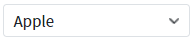
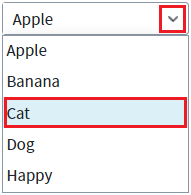
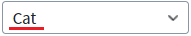
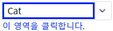
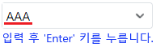
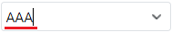
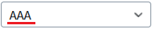
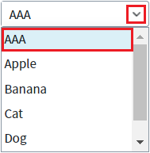
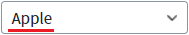

속성 'noResult' 설정 값 비교 예제입니다. 이 속성은 사용자가 편집 모드에서 항목과 일치하지 않는 값을 입력했을 때의 동작 유형을 설정할 수 있습니다.
속성 'noResult'의 설정 값을 'previous'로 지정한 예시
속성 'noResult'의 설정 값을 'clear'로 지정한 예시
속성 'noResult'의 설정 값을 'noEnd'로 지정한 예시
속성 'noResult'의 설정 값을 'useData'로 지정한 예시
속성 'noResult'의 설정 값을 'first'로 지정한 예시
STEP 1. 초기 상태 확인하기
영역 [(기본 설정) noResult="previous"]에 구성된 예제를 확인합니다.
'Apple' 항목이 선택된 상태입니다.그림 1.브라우저(Chrome) 실행 예시

STEP 2. 다른 항목을 선택합니다.
우측의 버튼을 클릭하여 세 번째 항목 'Cat'을 선택합니다. 또는 편집 모드에서 'Cat'을 입력합니다.
그림 2.브라우저(Chrome) 실행 예시

그림 3.브라우저(Chrome) 실행 예시

STEP 3. 편집 모드로 변경합니다.
'AutoComplete'의 우측에 구성된 버튼을 제외한 영역을 클릭합니다. 버튼을 클릭하면 목록이 표시됩니다.
그림 4.브라우저(Chrome) 실행 예시

STEP 4. 편집 모드에서 항목에 없는 값을 입력합니다.
입력 필드에서 "AAA"를 입력하고 키보드 'Enter'를 누릅니다.
그림 5.브라우저(Chrome) 실행 예시

STEP 5. 실행 결과를 확인합니다.
직전 선택 항목인 'Cat'이 선택(표시)됩니다.
그림 6.브라우저(Chrome) 실행 예시
STEP 1. 초기 상태 확인하기
영역 [noResult="clear"]에 구성된 예제를 확인합니다.
'Apple' 항목이 선택된 상태입니다.그림 7.브라우저(Chrome) 실행 예시
STEP 2. 다른 항목을 선택합니다.
우측의 버튼을 클릭하여 세 번째 항목 'Cat'을 선택합니다. 또는 편집 모드에서 'Cat'을 입력합니다.
그림 8.브라우저(Chrome) 실행 예시
그림 9.브라우저(Chrome) 실행 예시
STEP 3. 편집 모드로 변경합니다.
'AutoComplete'의 우측에 구성된 버튼을 제외한 영역을 클릭합니다. 버튼을 클릭하면 목록이 표시됩니다.
그림 10.브라우저(Chrome) 실행 예시
STEP 4. 편집 모드에서 항목에 없는 값을 입력합니다.
입력 필드에서 "AAA"를 입력하고 키보드 'Enter'를 누릅니다.
그림 11.브라우저(Chrome) 실행 예시
STEP 5. 실행 결과를 확인합니다.
빈 문자열이 표시됩니다.
그림 12.브라우저(Chrome) 실행 예시
이 기능은 입력 필드에서 'Enter' 키를 누른 경우만 적용됩니다. 'Tab' 키를 누르거나 그 외 방식으로 포커스가 이동된 경우에는 동작되지 않습니다.
STEP 1. 초기 상태 확인하기
영역 [noResult="noEnd"]에 구성된 예제를 확인합니다.
'Apple' 항목이 선택된 상태입니다.그림 13.브라우저(Chrome) 실행 예시
STEP 2. 다른 항목을 선택합니다.
우측의 버튼을 클릭하여 세 번째 항목 'Cat'을 선택합니다. 또는 편집 모드에서 'Cat'을 입력합니다.
그림 14.브라우저(Chrome) 실행 예시
그림 15.브라우저(Chrome) 실행 예시
STEP 3. 편집 모드로 변경합니다.
'AutoComplete'의 우측에 구성된 버튼을 제외한 영역을 클릭합니다. 버튼을 클릭하면 목록이 표시됩니다.
그림 16.브라우저(Chrome) 실행 예시
STEP 4. 편집 모드에서 항목에 없는 값을 입력합니다.
입력 필드에서 "AAA"를 입력하고 키보드 'Enter'를 누릅니다.
그림 17.브라우저(Chrome) 실행 예시
STEP 5. 실행 결과를 확인합니다.
입력 필드에 포커스가 유지됩니다.
그림 18.브라우저(Chrome) 실행 예시

STEP 1. 초기 상태 확인하기
영역 [noResult="useData"]에 구성된 예제를 확인합니다.
'Apple' 항목이 선택된 상태입니다.그림 19.브라우저(Chrome) 실행 예시
STEP 2. 다른 항목을 선택합니다.
우측의 버튼을 클릭하여 세 번째 항목 'Cat'을 선택합니다. 또는 편집 모드에서 'Cat'을 입력합니다.
그림 20.브라우저(Chrome) 실행 예시
그림 21.브라우저(Chrome) 실행 예시
STEP 3. 편집 모드로 변경합니다.
'AutoComplete'의 우측에 구성된 버튼을 제외한 영역을 클릭합니다. 버튼을 클릭하면 목록이 표시됩니다.
그림 22.브라우저(Chrome) 실행 예시
STEP 4. 편집 모드에서 항목에 없는 값을 입력합니다.
입력 필드에서 "AAA"를 입력하고 키보드 'Enter'를 누릅니다.
그림 23.브라우저(Chrome) 실행 예시
STEP 5. 실행 결과를 확인합니다.
'AAA' 항목이 추가되어 표시됩니다. (항목의 label과 value에 입력 값이 할당됩니다.)
그림 24.브라우저(Chrome) 실행 예시

그림 25.브라우저(Chrome) 실행 예시

STEP 1. 초기 상태 확인하기
영역 [noResult="first"]에 구성된 예제를 확인합니다.
'Apple' 항목이 선택된 상태입니다.그림 26.브라우저(Chrome) 실행 예시
STEP 2. 다른 항목을 선택합니다.
우측의 버튼을 클릭하여 세 번째 항목 'Cat'을 선택합니다. 또는 편집 모드에서 'Cat'을 입력합니다.
그림 27.브라우저(Chrome) 실행 예시
그림 28.브라우저(Chrome) 실행 예시
STEP 3. 편집 모드로 변경합니다.
'AutoComplete'의 우측에 구성된 버튼을 제외한 영역을 클릭합니다. 버튼을 클릭하면 목록이 표시됩니다.
그림 29.브라우저(Chrome) 실행 예시
STEP 4. 편집 모드에서 항목에 없는 값을 입력합니다.
입력 필드에서 "AAA"를 입력하고 키보드 'Enter'를 누릅니다.
그림 30.브라우저(Chrome) 실행 예시
STEP 5. 실행 결과를 확인합니다.
첫 번째 항목 'Apple'이 선택(표시)됩니다.
그림 31.브라우저(Chrome) 실행 예시

속성을 정의합니다.
[필수] noResult
사용자가 편집 모드에서 항목과 일치하지 않는 값을 입력했을 때의 동작 유형을 설정할 수 있습니다.
제시된 옵션 값으로 설정합니다.
(옵션 값)
- "previous" : [default] 이전 선택 값이 표시(선택)됩니다.
- "clear" : 입력 값이 삭제되고 빈 문자열로 표시됩니다.
- "noEnd" : 입력 모드가 유지됩니다. 이 기능은 'Enter' 키를 누른 경우만 적용됩니다.
- "useData" : 사용자가 입력한 값이 항목에 추가되고 표시됩니다. (항목의 label과 value에 입력 값이 할당됩니다.)
- "first" : 첫 번째 항목이 표시(선택)됩니다.
noResult